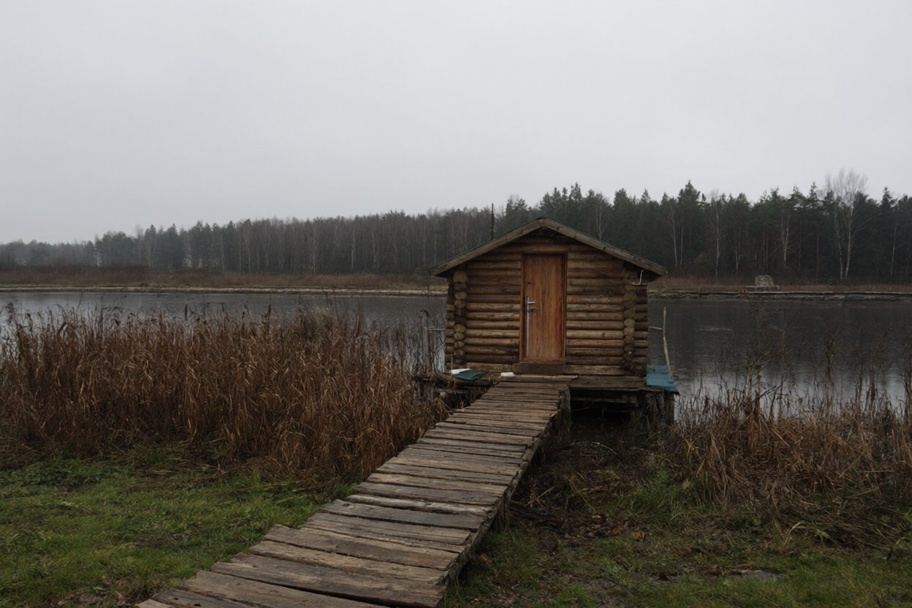

| Місце | Чугуївський р-н, біля с. Липова Балка, база відпочинку «Тиха заводь» (власник — Кравець В.) |
| Огляд | пн 29.10.2007, з 14:30 до 16:10; з дозволу адміністрації |
| Показувала | Людмила Кравець, адміністраторка |
| На місці | охоронець Гнатюк (камуфляж, шапка), у будці біля шлагбаума; на столі в будці — журнал охоронця, Гнатюк веде записи |
| Провів | Шульга В.І., група № 2 |
З слів адміністраторки, у ніч із суботи на неділю на базі проходив закритий банкет з нагоди дня народження господаря. Гостей було шість пар у котеджах і ще одна в ресторані (номер 2). Аркуш Людмили зі списком гостей — нижче; на пам'ять не покладаємось.
Територія огороджена сіткою, ворота зі шлагбаумом, поряд будка охоронця й ліхтар. До ресторану від воріт — кілька десятків метрів, котеджі — дугою на схід. План — нижче.

До лазні підійшли лише до доріжки. Людмила попросила всередину не заходити: міліція ще не дозволила прибирати. Охоронець підтвердив. Ми не наполягали.
Підпис: